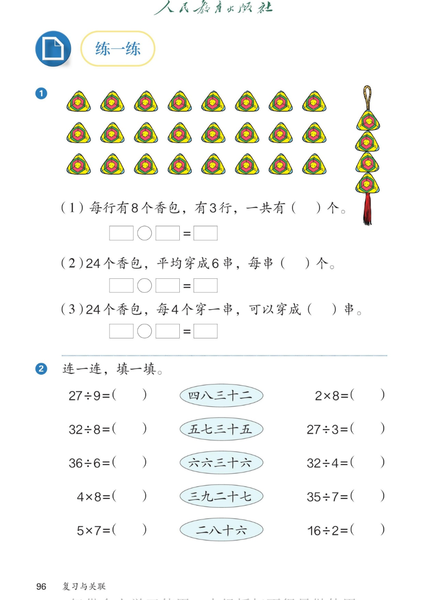

🔊 六、复习与关联 · 课本第 96 页 · 练一练 1~2
人教版《数学》二年级上册 · 有声图文带读 · 先想后看解析 · 香包一图三问 · 口诀连一连
题数
6
认知
2
强化
3
拓展
1
本页重点
乘除三问互逆 · 看图写算式 · 想口诀连算式
🎧 分两步学：
① 解析教材图片
——纯声音读图，读到哪一块哪一块闪动提示；关键处先倒计时让你思考，再在图片下方给出解析并朗读。
② 分层提问练习
——六道分层题（认知 / 强化 / 拓展），先思考再展开解析、朗读参考答案；这一步不再回到图片。
也可以随时点任意一句话、图上任意一块单独听；点课本文字卡还会展开答案。
教材图片（点块听读，读到哪块哪块闪）

📖 人教版《数学》二年级上册 · 课本第 96 页 · 图片仅供个人学习，版权归人民教育出版社所有
🤔 想一想（点我可跳过）
课本的文字（点句子：听读 + 看答案）
一图三问
香包三问有什么关系？
看答案 ▾
（1）8×3=
24
（个），求总数；
（2）24÷6=
4
（个），求每份数；
（3）24÷4=
6
（串），求份数；
💡 口诀都是三八二十四。
单位
三问的单位分别是什么？
看答案 ▾
（1）一共有多少
个
；
（2）每串多少
个
；
（3）可以穿成多少
串
；
💡 问什么，单位就是什么。
连一连
口诀连一连怎么连得又快又对？
看答案 ▾
四八三十二：32÷8=4、32÷4=8、4×8=32；
五七三十五：5×7=35、35÷7=5；
六六三十六：36÷6=6；三九二十七：27÷9=3、27÷3=9；
二八十六：2×8=16、16÷2=8。
发现
哪句口诀连的算式最多？哪句最少？
看答案 ▾
最多：四八三十二、二八十六、五七三十五、三九二十七（各 2~3 道）；
最少：六六三十六，只有 36÷6=6；
💡 乘数相同（六六、七七）的口诀管得最少。
分层提问练习（先想后看解析）
🧧
认知
每行 8 个香包、有 3 行，一共有多少个？
看解析
🤔 想一想
解析：
求 3 个 8，用乘法；
8×3=
24
（个）。
🧵
认知
24 个香包平均穿成 6 串，每串几个？
看解析
🤔 想一想
解析：
平均分，用除法；
24÷6=
4
（个）。
📝
强化
香包三问的三道算式分别怎么写？
看解析
🤔 想一想
解析：
8×3=
24
（个）；24÷6=
4
（个）；
24÷4=
6
（串）；
💡 一句口诀管三道算式
🔀
强化
第（2）问和第（3）问都是除法，有什么不同？
看解析
🤔 想一想
解析：
（2）知道
串数
，求每串几个（每份数）；
（3）知道
每串个数
，求串数（份数）；
💡 除法的两种含义，正好一对
🔗
强化
32÷8、32÷4、4×8 应该连到哪句口诀？
看解析
🤔 想一想
解析：
32÷8=
4
、32÷4=
8
、4×8=
32
；
都连到
四八三十二
；
🌈
拓展
为什么六六三十六连的算式最少？
看解析
🤔 想一想
解析：
两个乘数相同：6×6=36 只此一道；
除法也只有 36÷6=6 一道；
🌈 七七、八八也一样，只管两道
① 解析教材图片
② 分层提问练习
⏹ 停止
纯声音 + 高亮跟随 · 想好才出解析
← 返回导航